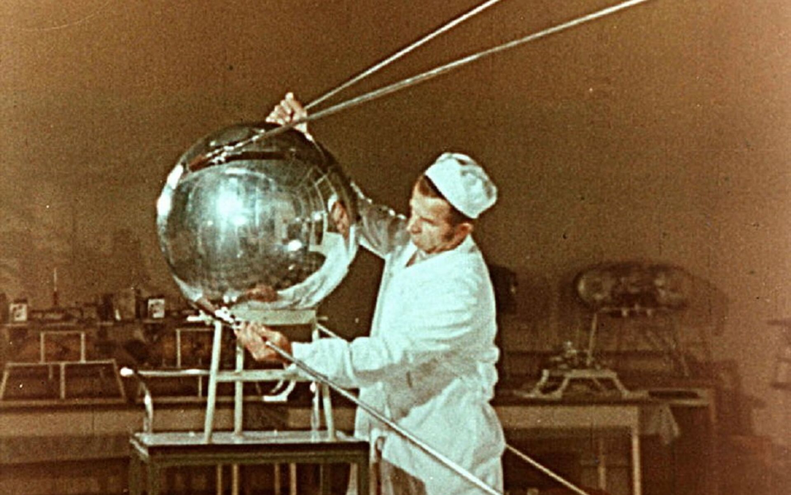
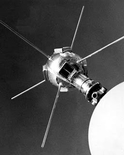
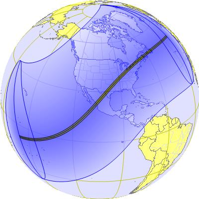
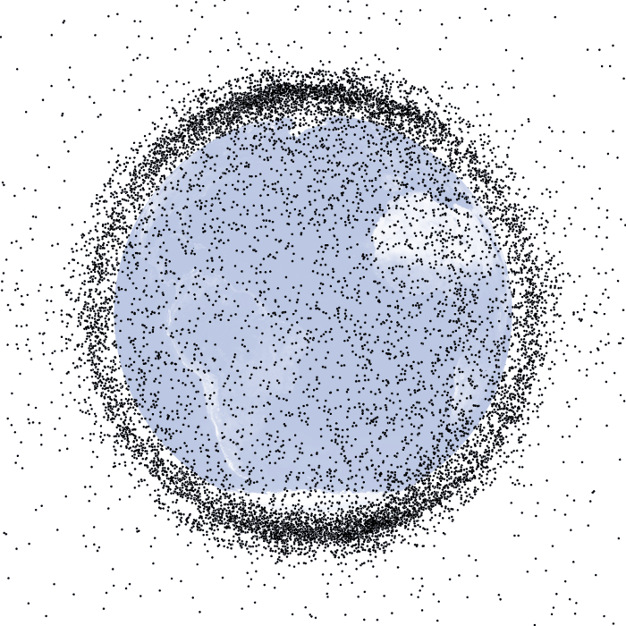
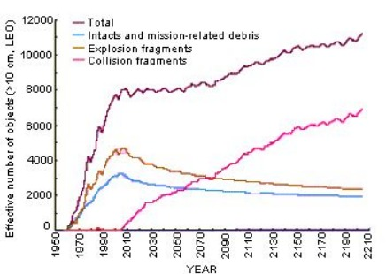
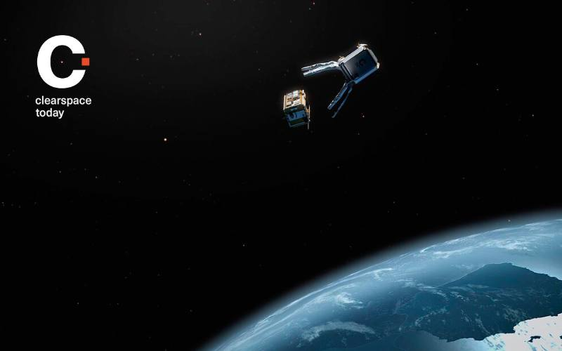

São considerados lixo espacial todos os objetos que se encontram na orbita da Terra, mas que já não desempenham nenhuma função útil. Estes vão desde pequenas ferramentas e peças até satélites abandonados. A acumulação destes detritos é um problema cada vez maior, pois aumenta o risco de acidente dos satélites e foguetões já em orbita e outos que venham a ser lançados.
< 1cm
É estimado que existam 128 milhões de fragmentos destas dimensões. São, na sua maioria, resultantes de colisões ou deterioração dos objetos espaciais.
1 - 10cm
Atualmente, são aproximadamente 900 mil objetos cujo tamanho varia entre uma bola de berlinde e uma bola de ténis. Muitos destes objetos são ferramentas, câmaras, cabos e células fotovoltaicas.
> 10cm
Apesar de existirem cerca de 34 mil fragmentos destas dimensões, apenas 26 mil são monitorizados. São naturalmente aqueles que representam um risco maior para os satélites e foguetões que navegam na orbita da Terra. Estes podem ir desde uma ferramenta de maior porte até um satélite inativo.
No passado dia 30 de outubro de 2023, os alunos das turmas 10º27 e 12º07 fizeram uma visita de estudo à Praia Formosa. Esta atividade consistiu numa limpeza de praia com sensibilização para a temática do lixo marinho, suas origens, impactes para a vida na Terra e reflexão sobre o papel de cada um de nós. A monitorização da atividade compreendeu recolha, identificação/triagem e pesagem do lixo encontrado na praia.A Drª Sara Ferreira do Museu de História Natural do Funchal orientou a atividade dinamizada.
3 de novembro de 2023
MadIT 2023
A Região Madeira da Ordem dos Engenheiros (RMOE), visando uma maior intervenção na sociedade e contribuindo ativamente para a construção de uma “Comunidade do conhecimento e da inovação”, organiza anualmente uma conferência denominada Madeira Innovation Talks, relacionada com inovação, conhecimento, criatividade, arte e cultura, entre outras áreas, não dirigida especificamente para engenheiros.
07 de março de 2024
Visita de Estudo
O Museu de Fotografia da Madeira - Atelier Vicente's assenta sobre um dos dois únicos estúdios de fotografia oitocentistas existentes em Portugal. Adquirido originalmente em 1865 por Vicente Gomes da Silva (1827-1906), possui entre o seu acervo, cenários, máquinas fotográficas, mobiliário especializado, molduras com fotografias originais, livros sobre técnicas fotográficas e um valioso arquivo fotográfico, que se estima contar entre 3 a 4 milhões de espécimes, que remontam até a década de cinquenta do século XIX, para além de ter um núcleo relativo ao cinema.
14 de maio de 2024
Palestra: Energia Nuclear na era das alterações climáticas
No dia 14 de maio, pelas 10h00, na Sala de Sessões da nossa escola, o Professor Doutor Bruno Soares Gonçalves proferiu uma palestra subordinada ao tema "Energia Nuclear na era das alterações climáticas". Esta palestra enquadra-se no tema Desenvolvimento Sustentável da Cidadania e Desenvolvimento que os alunos do 12.º ano estão a trabalhar durante este período.
23 de maio de 2024
Conferência: Segurança Digital: Manual de Sobrivência
No dia 23 de maio, pelas 13h30, na Sala de Sessões da nossa escola, a Professora Cristina Faia, Embaixadora Regional do SeguraNet, proferiu uma conferência subordinada ao tema "Segurança Digital: Manual de Sobrivência". A segurança digital é essencial na era da informação, onde a proteção de dados e a privacidade são fundamentais.
2023
.
2024
A Nossa Equipa
“No one can whistle a symphony. It takes a whole orchestra to play it.” — H.E. Luccock
Tiago Ascensão
Futuro varredor de lixo espacial
Mateus Almeida
Futuro primeiro astronauta a ir ao sol
Nós somos alunos do décimo segundo ano da Escola Francisco Franco e realizámos este trabalho na disciplina de Aplicações Informáticas B. Sempre fomos interessados em tudo o que se relaciona com o espaço, acompanhamos as várias descobertas e experiências que são feitas e aspiramos, um dia, fazer parte delas. Decidimos abordar este tema, pois consideramos que este é um problema que irá condicionar o futuro da humanidade, se nada for feito, mas que não lhe é dada atenção suficiemte. Esperamos conseguir consciencalizar mais pessoas não só sobre o espaço, mas também sobre a maneira com o estamos a tratar.
Entre em Contacto Conosco
História do Espaço
De Yuri Gagarin a Elon Musk

Fotografia da Sputnik1, o primeiro satélite a ser lançado para o espaço
Atravessar os limites atmosféricos pressupostos pelo nosso planeta, desde os primórdios da humanidade, foi um gigantesco sonho do ser humano. É então que, chegando às décadas de 1950 e 1960, que tudo muda, uma vez que, o que outrora tinha a conotação de sonho, passa a ser realidade.
Resultante de engenharia, inovação, e determinação inigualáveis, as primeiras explorações espaciais retratam um dos marcos mais significativos na história, já que, impulsionado pelo contexto da Guerra Fria e pelo interesse político tanto dos Estados Unidos da América como da União Soviética, foi presenciada uma das maiores demonstrações e competições de modo a mostrar que a superioridade tecnológica era um símbolo de poder e prestígio.
Em contexto temporal, o início da Corrida ao Espaço é associado ao lançamento do Sputnik 1 pela União soviética a 4 de outubro de 1957, sendo o primeiro dos inúmeros futuros satélites artificiais a orbitar a terra. O Sputnik 1 não demonstrou apenas a capacidade da URSS, mas também influenciou e aumentou as tensões políticas e militares, levando à concepção do estigma fundamental do movimento histórico, “A supremacia do espaço é crucial para revelar poder e segurança nacional”.
Como em qualquer competição, o oponente, os EUA, responderam fundando a mais conhecida organização espacial, a NASA (National Aeronautics and Space Administration). Determinados a superar os soviéticos, lançaram o programa Apollo, que culminou com a missão Apollo 11. A 20 de Julho de 1969, Neil Armstrong e Buzz Aldrin aterraram na Lua, enquanto Michael Collins orbitava ao redor do nosso satélite natural. O famoso "pequeno passo para o homem, um grande salto para a humanidade" de Armstrong simbolizou não apenas o triunfo tecnológico dos EUA, mas também o culminar da Corrida ao Espaço.
As primeiras explorações espaciais estabeleceram as bases para as missões subsequentes e para a exploração espacial moderna, demonstrando o potencial da humanidade para alcançar o desconhecido e transformar o impossível em realidade.
Causas do Problema
Como tudo começou e como deixámos chegar a este ponto

Satélite Vanguard-I
Desde o momento em que o ser humano transcendeu os limites atmosféricos, surgiram as primeiras peças de lixo espacial. Luvas, parafusos, ferramentas e outros objetos foram relevantes para o começo de uma nova era, e de uma nova forma de poluição. No entanto, e alargando a escala dimensional, é possível restringir a ocular a alguns objetos de maior dimensão que foram extremamente relevantes para a poluição espacial. Retrocedendo a 1958, verificamos que os EUA lançaram o seu segundo satélite Vanguart I e, apesar de cumprir com as funcionalidades desejadas, o satélite em formato de esfera (com aproximadamente 1,5 quilogramas e 16,5 centímetros de diâmetro), deixou de comunicar com a terra 6 anos após o seu lançamento, em 1964, sendo assim a primeira peça relevante de lixo espacial. Hoje, mais de 60 anos depois, este ainda permanece em órbita. Já em 1987, um satélite da linha de produção Kosmos, explodiu dando origem a cerca de 850 resíduos, cuja influência é até hoje percetível nas missões espaciais. Embora a presença do problema, os encarregues só começaram a conduzir manobras de evasão a tais detritos no ano de 1991, uma vez que, desviaram a nave Discovery de modo a não embater com partes do Kosmos. Atualmente, as missões espaciais estão, mais do que nunca, extremamente comprometidas devido à quantidade excessiva de satélites. Segundo especialistas, como a velocidade orbital no planeta é bastante elevada (15 0000 km/h), mesmo uma lasca de tinta do tamanho de um grão de sal pode ser responsável por causar grandes danos
Lançamentos
Monitorização e Heavens Above: o sky skaner do espaço

Exemplo de previsão de um eclipse solar da Heavens Above
Tal como é feito com os aviões, é importante controlar os lançamentos de satelites bem como os movimentos dos que já se encontram em órbita. Este controlo começa com a previsão de uma rota de lançamento e posteriormente de uma órbita na qual o satelite irá circular. É preciso garantir uqe esta não só permite ao aparelho desempenhar a sua função, seja esta relacionada com as telecomunicações, localização ou outra área, mas também que é uma órbita segura e que não compromete a integridade do aparelho. Garantir que esta não coincide com a de um outro satélite já não é fácil, e implica uma monitorização constante e comunicação entre todas as agências espacias. O acumular do lixo espacial apenas veio dificultar esta tarefa, pois não é só necessário garantir que os milhares de satélites em órbita não colidem uns com os outros, mas também que não colidem com qualquer detrito que possa afetar o seu funcionamento.
Nem todos os detritos representam o mesmo perigo. Uma luva de astronauta não consegue destruir um satélite, mas restos de um foguete são capazes de o fazer. É também impossível monitorizar todos os detritos que se encontram em órbita. Desta forma, são apenas monitorizados aqueles que representam um maior perigo de forma a minimizar os acidentes. Com todas estas precauções nos lançamentos, conseguimos diminuir bastante a probabilidade de um acidente em órbita. No entanto, pode sempre acontecer uma colisão com um detrito não monitorizado ou até mesmo uma súbita mudança de rumo de um detrito monitorizado que leve a uma colisão.
Não são apenas as agências espaciais que fazem este trabalho de mapear a órbita do nosso planeta. Também a Heavens Above mostra o quê que se passa lá em cima. A Heavens Above é uma plataforma online amplamente reconhecida por fornecer informações detalhadas sobre satélites, estrelas, planetas e outros objetos celestes visíveis a olho nu. Foi criada para entusiastas da astronomia e profissionais, oferecendo ferramentas e recursos para observar e acompanhar eventos astronômicos em tempo real.
Uma das principais funcionalidades da Heavens Above é a sua capacidade de prever e mostrar passagens de satélites, incluindo a Estação Espacial Internacional (ISS), o Hubble Space Telescope e diversos satélites de comunicações. Os utilizadores podem inserir a sua localização geográfica para obter previsões precisas sobre quando e onde poderam ver estes objetos a passar no céu.
Para além disto, a Heavens Above também oferece informações detalhadas sobre eventos astronômicos como chuvas de meteoros, fases da lua, eclipses solares e lunares, e conjunções planetárias. Os mapas estelares interativos e as tabelas de visibilidade ajudam os observadores a identificar e localizar estrelas, constelações e planetas.
Na Órbita da Terra
Nem todos os detritos órbitam o planeta da mesma maneira

Exemplificação da distribuição dos detritos na órbita da Terra
O movimento dos planetas é, desde os seus descobrimentos, bastante debatido perante a comunidade científica. Após a investigação necessária, os cientistas depreenderam que, um objeto sob a influência de uma força central, tem tendência a descrever um movimento curvado, trajetória esta a que chamaram de órbita. Estas, podem ser classificadas de inúmeras maneiras, sendo que as principais fazem referência, à sua forma e altitude.
Segundo a Forma:
Órbitas Circulares: A distância entre o objeto e o corpo central é constante.
Órbitas Elípticas: A trajetória do objeto é uma elipse, com o corpo central localizado em um dos focos da elipse.
Órbitas Parabólicas: A trajetória do objeto é uma parábola.
Órbitas Hiperbólicas: A trajetória do objeto é uma hipérbole.Neste caso, o objeto tem velocidade suficiente para escapar do campo gravitacional do corpo central.
Segundo a Altitude em Relação à Terra:
Órbita Baixa Terrestre (LEO, Low Earth Orbit): Altitude entre 160 km e 2.000 km. Exemplo: Estação Espacial Internacional (ISS).
Órbita Média Terrestre (MEO, Medium Earth Orbit): Altitude entre 2.000 km e 35.786 km.
Exemplo: Satélites de navegação, como os GPS.
Órbita Geoestacionária (GEO, Geostationary Orbit): Um tipo específico de órbita geossíncrona que é circular e situada no plano do equador terrestre, permanecendo fixa sobre um ponto na superfície.
Órbita Alta Terrestre: Altitude maior que 35.786 km
De todas as órbitas existentes no nosso planeta, a que mais está poluída é a mais baixa (LEO).
Perigos e Impactos
Análise do problema e dos acidentes causados

Gráfico que mostra as quantidades emitidas de diferentes tipos de lixo espacial, desde o início da era espacial
A Síndrome de Kessler, é uma teoria proposta pelo cientista da NASA Donald J. Kessler em 1978, abordando um problema grave relacionado ao excesso de detritos espaciais na órbita terrestre baixa (LEO). Segundo Kessler, à medida que a quantidade de detritos espaciais aumenta, o risco de colisões entre esses objetos também cresce, resultando numa reação em cadeia onde cada colisão gera ainda mais fragmentos, aumentando exponencialmente o número de detritos. Os impactos da Síndrome de Kessler são variados e abrangem vários aspetos importantes das atividades espaciais e da vida na Terra. Com o aumento dos detritos, realizar missões de exploração espacial é cada vez mais perigoso e complicado, pois as colisões poderiam danificar ou destruir objetos tripulados e não tripulados. Além disso, satélites essenciais para serviços de comunicação, como rádio, televisão, telefone e GPS, estariam em constante risco, e caso esses fossem destruídos, seriamos servidos de um prato de consequências amargo, uma vez que, seriam interrompidas as comunicações globais e os sistemas de navegação estariam indisponíveis. Uma parte dos objetos em órbita pode reentrar na atmosfera da Terra, mas a maioria dos detritos pode permanecer em órbita por décadas ou até séculos, dependendo de sua altitude.
Soluções
O quê que está a ser feito?

Simulação da missão ClearSpace-1, agendada para 2026, que será a primeira com o objetivo de combater o lixo espacial
Diversas soluções têm sido propostas e desenvolvidas para lidar com esta questão, sendo uma das mais promissoras o projeto Clean Space One. Uma das principais abordagens para combater a poluição espacial é o desorbitamento controlado, que envolve a utilização de sistemas a bordo de satélites para garantir que, ao fim da sua vida útil, eles sejam direcionados de forma controlada para reentrar na atmosfera terrestre e queimar-se completamente, minimizando assim o risco de criação de novos detritos. Outra solução é a captação e remoção de detritos, através de modelos e sistemas inovadores na área. Estas tecnologias incluem redes, harpoons e braços robóticos capazes de recolher fragmentos de vários tamanhos. Além disso, investir na investigação e design de satélites também é uma estratégia importante. O desenvolvimento de satélites com vidas úteis mais curtas, ou equipados com tecnologias de auto-destruição controlada, pode reduzir significativamente a quantidade de detritos criados. Acordos e regulações internacionais são igualmente cruciais, estabelecendo normas para a mitigação de detritos espaciais, incluindo a obrigatoriedade de desorbitamento de satélites após o término das suas missões, o que ajuda a coordenar esforços globais. Entre as iniciativas mais inovadoras no campo da remoção de detritos espaciais destaca-se o Clean Space One, desenvolvido pela Escola Politécnica Federal de Lausanne (EPFL) na Suíça. Este projeto visa criar um satélite de remoção que possa capturar e desorbitar detritos específicos. O Clean Space One será equipado com um braço robótico ou uma pinça capaz de agarrar detritos espaciais, onde a precisão na captura é essencial para garantir que os fragmentos sejam removidos sem gerar mais detritos. Após a captura, o satélite irá desorbitar os detritos de forma controlada, assegurando que eles reentrem na atmosfera terrestre e se desintegrem completamente. Para isso, o Clean Space One utilizará sistemas avançados de navegação e propulsão para manobrar até os detritos alvo, mesmo em órbitas complexas e em movimento rápido. Embora ainda esteja em fase de desenvolvimento e testes, o projeto representa uma abordagem prática e inovadora para a resolução do problema. O Clean Space One é um exemplo claro de como a inovação e a tecnologia podem ser aplicadas para resolver problemas ambientais além do nosso planeta. À medida que a exploração espacial continua a expandir-se, projetos como este serão cruciais para garantir que o espaço se mantenha um ambiente seguro e sustentável para futuras gerações de exploradores e tecnologias.